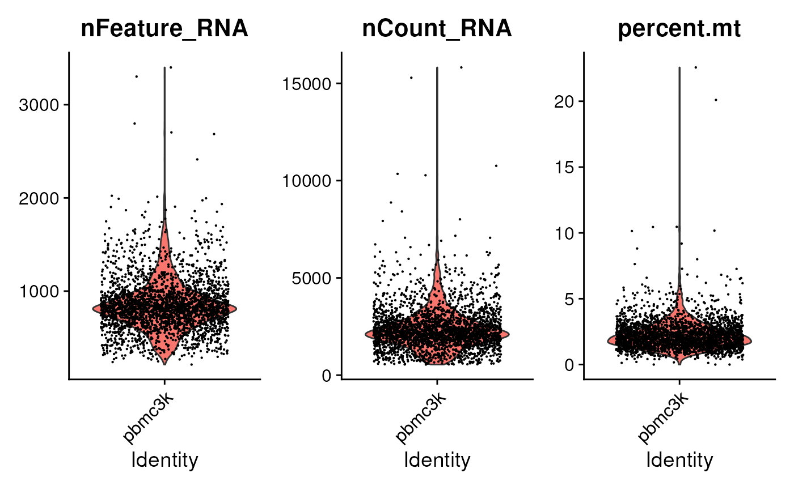

C. Single-Cell Sequence Analysis
c-sc-analysis.RmdIn the previous article we saw how to make HCA / CELLxGENE data
available as SingleCellExperiment or Seuart
objects. From here there are rich, well-documented workflows for
subsequent analysis. We’ll point to these resources and outline overall
workflows, but will only perform illustrative calculations.
Some steps require both computing time and resources that aren’t suitable for workshop presentation so we focus on a ‘classic’ data set, the 10x Genomics Peripheral Blood Mononuclear Cells (PBMC) dataset conssists of 2,700 cells. Analysis of data sets with say 50,000 cells might require 32- or 64 GB of memory and take up to an hour for an end-to-end analysis; one way to access a computer with the much memory might be through a commercial (Google, Azure, AWS) cloud, or on a research network like the AnVIL computational cloud.
Seurat
Based on Getting Started with Seurat and the Seurat - Guided Clustering Tutorial. The guided tutorial covers
- Data input
- Quality Control
- Normalization
- Identification of highly variable features
- Scaling the data
- Linear dimensional reduction
- Clusters
- Non-linear dimensional reduction (e.g., UMAP)
- Differential expression
- Cell type assignment
To illustrating working with Seurat, we take the first
few steps through this workflow.
Workflow
Here we re-capitulate some of the initial steps in the Seurat tutorial.
Data retrieval. Here we retrieve the raw data to a local cache. It is
distributed as a compressed ‘tar’ archive, so we untar() it
to a temporary location.
## download to local cache
url <- paste0(
"https://cf.10xgenomics.com/samples/cell/pbmc3k/",
"pbmc3k_filtered_gene_bc_matrices.tar.gz"
)
pbmc3k_tar_gz <- BiocFileCache::bfcrpath(rname = url)
## 'untar' to a temporary location
pbmc3k_directory <- tempfile()
untar(pbmc3k_tar_gz, exdir = pbmc3k_directory)
## location of the relevant data
pbmc3k_data_dir <-
file.path(pbmc3k_directory, "filtered_gene_bc_matrices", "hg19")Following the Seurat tutorial, we read the data into a sparse matrix, and then into a Seurat object.
library(Seurat)
## Attaching SeuratObject
## read the 10x data as a sparse matrix
pbmc.data <- Read10X(data.dir = pbmc3k_data_dir)
class(pbmc.data)
## [1] "dgCMatrix"
## attr(,"package")
## [1] "Matrix"
dim(pbmc.data) # 32738 features (genes) x 2700 samples (cells)
## [1] 32738 2700
## create a Seurat object from the count matrix
pbmc <- CreateSeuratObject(
counts = pbmc.data,
project = "pbmc3k",
## filter some features (present in less than 3 cells) and cells
## (fewer than 200 features)
min.cells = 3, min.features = 200
)
## Warning: Feature names cannot have underscores ('_'), replacing with dashes
## ('-')
pbmc # 13714 features x 2700 samples
## An object of class Seurat
## 13714 features across 2700 samples within 1 assay
## Active assay: RNA (13714 features, 0 variable features)
pbmc[["RNA"]]
## Assay data with 13714 features for 2700 cells
## First 10 features:
## AL627309.1, AP006222.2, RP11-206L10.2, RP11-206L10.9, LINC00115, NOC2L,
## KLHL17, PLEKHN1, RP11-54O7.17, HES4The first step in the workflow is to perform quality control. Start by identifying the mitochondrial genes. In this particular example, mitchondrial genes are annotated based on the feature name.
## The [[ operator can add columns to object metadata. This is a great
## place to stash QC stats
pbmc[["percent.mt"]] <- PercentageFeatureSet(pbmc, pattern = "^MT-")Visualize some metrics…

…and use ad hoc criteria to filter features;
subset() is a base R function.
pbmc <- subset(
pbmc,
subset = nFeature_RNA > 200 & nFeature_RNA < 2500 & percent.mt < 5
)
pbmc
## An object of class Seurat
## 13714 features across 2638 samples within 1 assay
## Active assay: RNA (13714 features, 0 variable features)The workflow continues from here…
Bioconductor
The following is based on Orchestrating Single-Cell Analysis with Bioconductor. This resource is separated into introductory, basic, advanced, and multi-sample sections, with a collection of workflows illustrating use. A good place to start is with a workflow to get a feel for data analysis, and then to refer back to earlier sections for more detailed operations or understanding.
We’ll follow the Unfiltered human PBMCs workflow for another PBMC data, but use the same dataset as in the Seurat section earlier in this article.
Workflow
Data retrieval is a outlined above. After untar()ing the
data pbmc3k_data_dir is the location to use for data
input.
pbmc3k <- read10xCounts(pbmc3k_data_dir, col.names = TRUE)
## as(<dgTMatrix>, "dgCMatrix") is deprecated since Matrix 1.5-0; do as(., "CsparseMatrix") instead
pbmc3k
## class: SingleCellExperiment
## dim: 32738 2700
## metadata(1): Samples
## assays(1): counts
## rownames(32738): ENSG00000243485 ENSG00000237613 ... ENSG00000215616
## ENSG00000215611
## rowData names(2): ID Symbol
## colnames(2700): AAACATACAACCAC-1 AAACATTGAGCTAC-1 ... TTTGCATGAGAGGC-1
## TTTGCATGCCTCAC-1
## colData names(2): Sample Barcode
## reducedDimNames(0):
## mainExpName: NULL
## altExpNames(0):Skipping to the quality control step, let’s identify mitochondrial
genes. In this data set, we can identify the mitochondrial genes by
looking at the Symbol column of rowData()
rowData(pbmc3k) |>
dplyr::as_tibble() |>
dplyr::filter(startsWith(Symbol, "MT-"))
## # A tibble: 13 × 2
## ID Symbol
## <chr> <chr>
## 1 ENSG00000198888 MT-ND1
## 2 ENSG00000198763 MT-ND2
## 3 ENSG00000198804 MT-CO1
## 4 ENSG00000198712 MT-CO2
## 5 ENSG00000228253 MT-ATP8
## 6 ENSG00000198899 MT-ATP6
## 7 ENSG00000198938 MT-CO3
## 8 ENSG00000198840 MT-ND3
## 9 ENSG00000212907 MT-ND4L
## 10 ENSG00000198886 MT-ND4
## 11 ENSG00000198786 MT-ND5
## 12 ENSG00000198695 MT-ND6
## 13 ENSG00000198727 MT-CYB
is_mitochondrial <-
rowData(pbmc3k)$Symbol |>
startsWith("MT-") |>
which()Calculate per-cell quality control metrics…
stats <- perCellQCMetrics(pbmc3k, subsets=list(Mito=is_mitochondrial))
stats |> dplyr::as_tibble()
## # A tibble: 2,700 × 6
## sum detected subsets_Mito_sum subsets_Mito_detected subsets_Mito_pe…¹ total
## <dbl> <int> <dbl> <int> <dbl> <dbl>
## 1 2421 781 73 10 3.02 2421
## 2 4903 1352 186 10 3.79 4903
## 3 3149 1131 28 8 0.889 3149
## 4 2639 960 46 10 1.74 2639
## 5 981 522 12 5 1.22 981
## 6 2164 782 36 7 1.66 2164
## 7 2176 783 83 10 3.81 2176
## 8 2260 790 70 9 3.10 2260
## 9 1276 533 15 6 1.18 1276
## 10 1103 550 32 7 2.90 1103
## # … with 2,690 more rows, and abbreviated variable name ¹subsets_Mito_percent
high_mito <- isOutlier(stats$subsets_Mito_percent, type="higher")
table(high_mito)
## high_mito
## FALSE TRUE
## 2607 93…and use high_mito to create a subset of the results
pbmc3k[, !high_mito]
## class: SingleCellExperiment
## dim: 32738 2607
## metadata(1): Samples
## assays(1): counts
## rownames(32738): ENSG00000243485 ENSG00000237613 ... ENSG00000215616
## ENSG00000215611
## rowData names(2): ID Symbol
## colnames(2607): AAACATACAACCAC-1 AAACATTGAGCTAC-1 ... TTTGCATGAGAGGC-1
## TTTGCATGCCTCAC-1
## colData names(2): Sample Barcode
## reducedDimNames(0):
## mainExpName: NULL
## altExpNames(0):The workflow continues…!
Brief Commentary
It is worthwhile to compare the Seurat and SingleCellExperiment work flows.
Actually, a first question is ‘why not just have a single function that takes the analysis from begining to end?’ Answers might be
It is educational to understand the data transformations and their assummptions required in an analysis.
No two data sets are the same, so at any step some manipulation (e.g., to identify mitochondrial genes), choice of algorithm, or interpretation of results might be required.
What about the difference between the Seurat and Bioconductor workflows? In broad detail the analyses accomplish the same ends. Seurat is more standardized and widely used, while Bioconductor may beless standardized and more flexible.